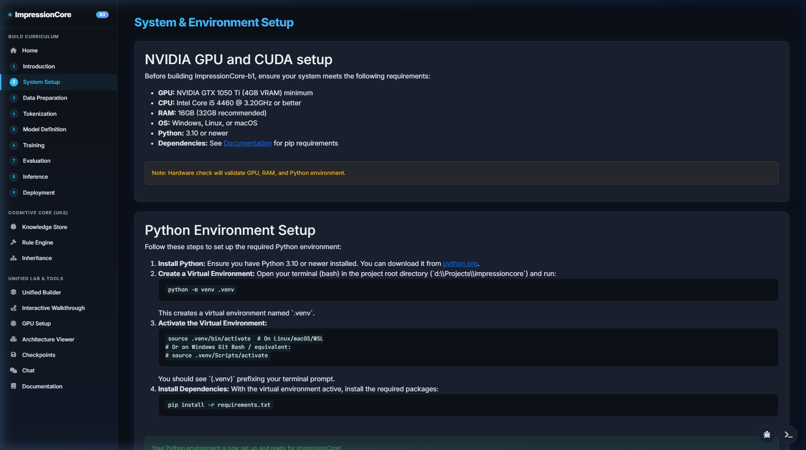

Documentation Hub & IDS Semantic Explorer
Instant client-side semantic search across over 1,600 indexed documentation files, architectural contracts, PyTorch implementation guides, and hardware telemetry records.
5-Minute Rapid Setup Guide
Get the entire ImpressionCore Model Builder and Runtime running locally on Windows, Linux, or macOS in 5 simple commands.
1. Clone & Setup Virtual Environment
Requires Python 3.10+ and CUDA 12.1+ (optional for GPU acceleration):
git clone https://github.com/kirklasalle/impressioncore.git cd impressioncore python -m venv .venv .venv\Scripts\activate # Windows # source .venv/bin/activate # Linux / macOS pip install -r requirements.txt
2. Launch System A & System B
Launch the Model Builder on Port 5000 and Runtime on Port 8000:
# Launch Unified Model Builder (Port 5000) launch_builder.bat # Launch ImpressionCore Runtime (Port 8000 / 5173) launch_impressioncore.bat

Automated Verification & CI/CD Testing
ImpressionCore includes a comprehensive automated builder verification script testing all 9 builder site functions, preflights, and real model runs.
# Run the full automated Builder verification suite: python src/dev_tools/exercise_builder_site.py # Run PyTest unit tests across core modules: pytest tests/ -v
✅ Preflight Checks
Automated CUDA driver checks, device memory queries, and PyTorch 2.6+ bypass validation.
✅ Model Contract Audits
Forward pass verification for B1 39M, B2 50M, and B3 504M architectures with zero NaN gradients.
✅ Non-Repudiation Logs
Automated SHA-256 checkpoint hashing ensuring exact mathematical reproducibility.